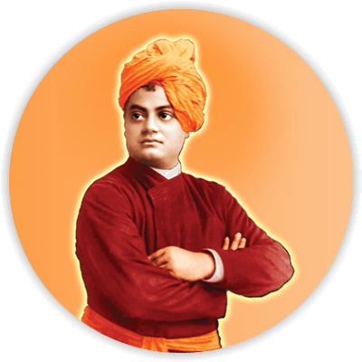

Swami Vivekananda
1863 - 1902
"You have to grow from the inside out. None can teach you, none can make you spiritual. There is no other teacher but your own soul. We are what our thoughts have made us; so take care about what you think. Words are secondary. Thoughts live; they travel far."
~Swami Vivekananda
Overview
- Swami Vivekananda was a Hindu monk and a renowned spiritual leader from India. He was born on January 12, 1863, in Kolkata, India and died on July 4, 1902, in Belur Math, India.
- Swami Vivekananda was one of the most influential philosophers and thinkers of the 19th century, who played a significant role in the revival of Hinduism in India and popularized it in the West. He was the disciple of Sri Ramakrishna Paramahamsa, who taught him the principles of Advaita Vedanta, which became the foundation of Swamiji's teachings.
- Swami Vivekananda is well known for his famous speech at the World's Parliament of Religions in Chicago in 1893, where he introduced Hinduism to the West and delivered his famous message of universal brotherhood. He spoke about the importance of religious tolerance and understanding, and his speech was widely acclaimed and considered a turning point in the history of interfaith dialogue.
- Swamiji's teachings emphasize the unity of all religions and the oneness of the human spirit. He believed that all religions lead to the same ultimate truth, and that the goal of life is to realize this truth and attain self-realization. He also stressed the importance of service to others, and founded the Ramakrishna Mission, a philanthropic organization that provides social services and spiritual guidance to people of all backgrounds.
- Swami Vivekananda's contributions to Indian philosophy and spirituality have been widely recognized and he continues to inspire millions of people around the world with his teachings. His legacy is celebrated every year on his birthday, which is observed as National Youth Day in India.
Famous Quotes for Inspiration
-You have to grow from the inside out. None can teach you, none can make you spiritual. There is no other teacher but your own soul.
-You cannot believe in God until you believe in yourself.
-Arise,awake and donot stop until the goal is reached.
-We are what our thoughts have made us; so take care about what you think. Words are secondary. Thoughts live; they travel far.
-Truth can be stated in a thousand different ways, yet each one can be true.
-The world is the great gymnasium where we come to make ourselves strong.